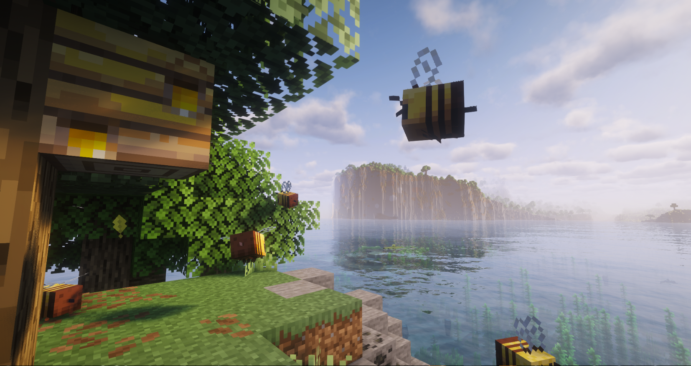

Что такое Apiary SMP?
Apiary SMP — это уникальный сервер Minecraft с пчелиной тематикой. Здесь вас ждёт уютное выживание, развитие пасек, участие в тематических мероприятиях и строительство красивых ульев.
Сервер работает круглосуточно и регулярно пополняется новым контентом, чтобы игровой процесс оставался интересным и разнообразным.
